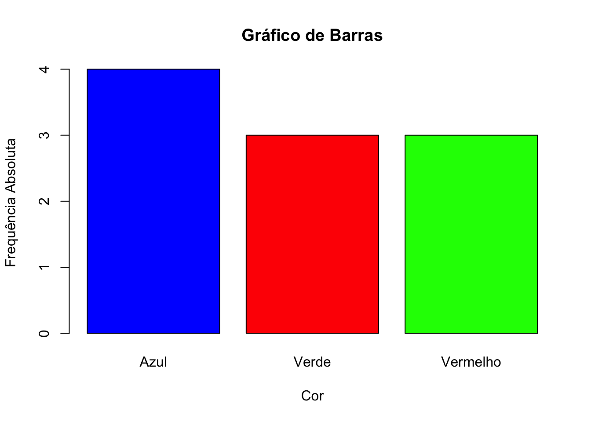
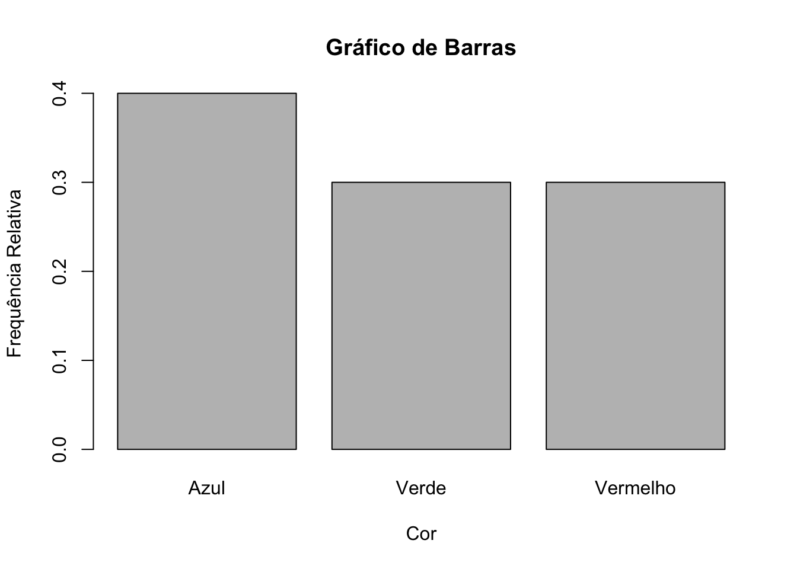
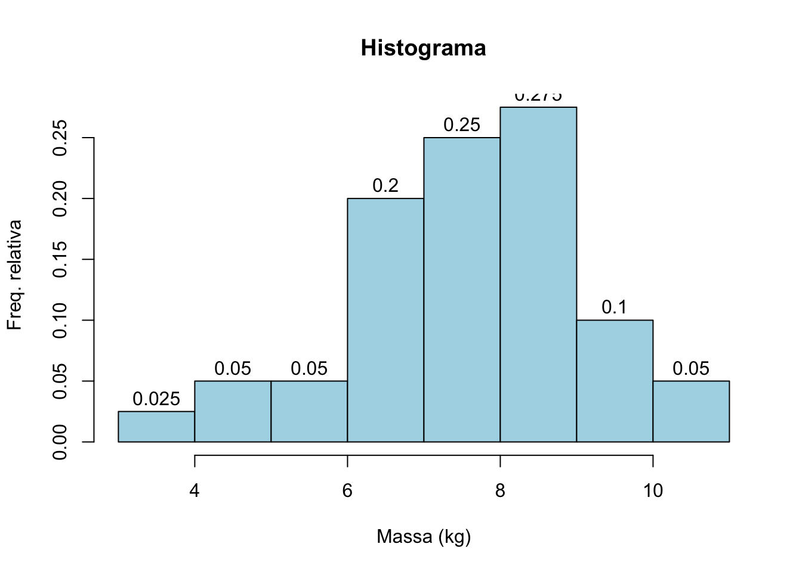
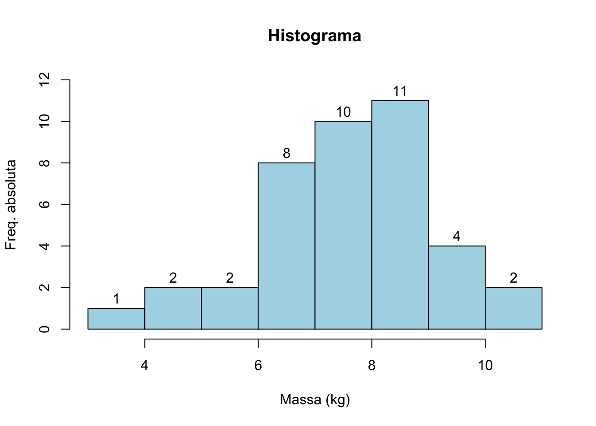
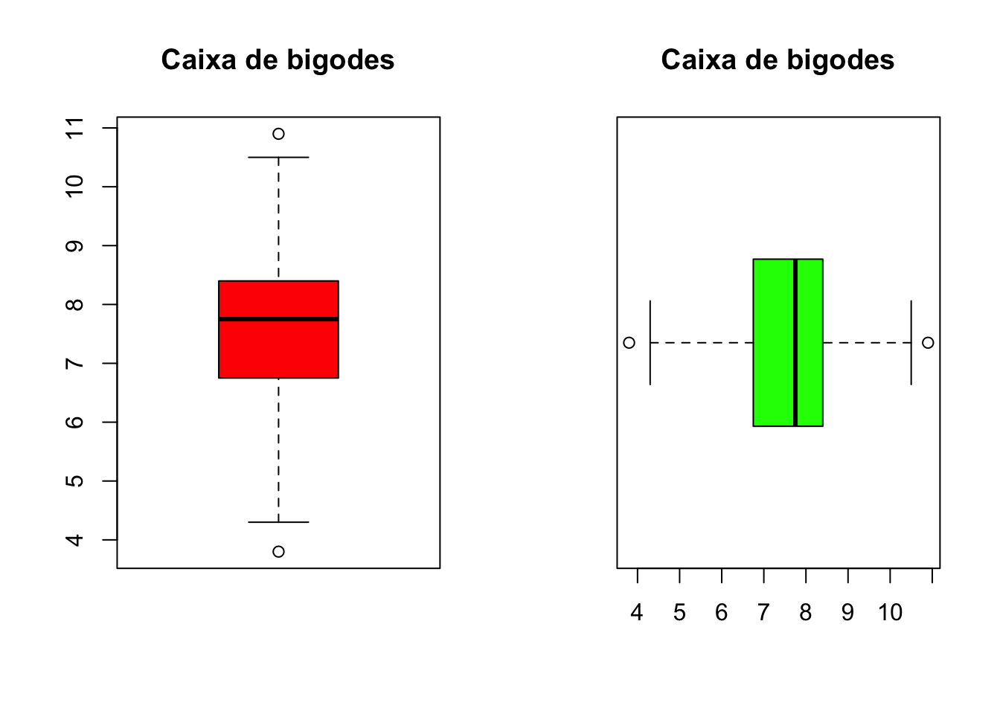

Capítulo 17 Gráficos em R
17.1 Gráfico de Barras
Gráfico de barras: Conjunto de barras verticais ou horizontais. Cada barra representa uma categoria, e a altura da barra mostra a frequência sbsoluta ou relativa dessa categoria. A largura das barras não tem significado.
# Dados de exemplo: cores favoritas
cores <- c("Azul", "Vermelho", "Verde", "Azul", "Verde",
"Vermelho", "Azul", "Verde", "Azul", "Vermelho")
# Calcular as frequências absolutas
frequencia_absoluta <- table(cores)
# Criar o gráfico de barras com frequências absolutas
barplot(frequencia_absoluta,
main = "Gráfico de Barras",
xlab = "Cor",
ylab = "Frequência Absoluta",
col = c("blue", "red", "green")) 
# Calcular as frequências relativas
frequencia_relativa <- frequencia_absoluta / length(cores)
# Criar o gráfico de barras com frequências relativas
barplot(frequencia_relativa,
main = "Gráfico de Barras",
xlab = "Cor",
ylab = "Frequência Relativa") 
17.2 Gráfico circular (pizza)
Gráfico circular: Exibe as proporções ou percentagens de diferentes categorias de dados em relação a um todo. Cada categoria é representada como uma “fatia” do círculo, e o tamanho de cada fatia é proporcional à sua contribuição para o total.
# Criar gráfico circular
pie(frequencia_relativa, main="Gráfico circular",
col=c("blue","green","red"))
17.3 Histograma
Histograma é uma representação gráfica dos dados em que se marcam as classes (intervalos) no eixo horizontal e as frequências (absuluta ou relativa) no eixo vertical.
Cada retângulo corresponde a uma classe.
A largura de cada retângulo é igual à amplitude da classe
Se as classes tiverem todas a mesma amplitude, a altura do retângulo é proporcional à frequência.
Por default, o R utiliza a frequência absoluta para construir o histograma. Se tiver interesse em representar as frequências relativas, utilize a opção freq=FALSE nos argumentos da função hist(). O padrão de intervalo de classe no R é \((a, b]\).
# Considere os dados referentes à massa (em kg) de 40 bicicletas
bicicletas <- c(4.3,6.8,9.2,7.2,8.7,8.6,6.6,5.2,8.1,10.9,7.4,4.5,3.8,7.6,6.8,7.8,8.4,7.5,10.5,6.0,7.7,8.1,7.0,8.2,8.4,8.8,6.7,8.2,9.4,7.7,6.3,7.7,9.1,7.9,7.9,9.4,8.2,6.7,8.2,6.5)
h <- hist(bicicletas,
main = "Histograma",
xlab = "Massa (kg)",
ylab = "Freq. absoluta",
ylim = c(0,12),
labels = TRUE,
col = "lightblue")
## [1] 3 4 5 6 7 8 9 10 11## [1] 1 2 2 8 10 11 4 2# Histograma com frequência relativa
hist(bicicletas,
main = "Histograma",
xlab = "Massa (kg)",
ylab = "Freq. relativa",
freq = FALSE,
labels = TRUE,
col = "lightblue")
17.4 Box-plot

# Caixa de bigodes horizontal
boxplot(bicicletas, main = "Caixa de bigodes", col="green", horizontal = TRUE)
# Caixa de bigodes lado a lado
par(mfrow=c(1,2))
# Caixa de bigodes vertical
boxplot(bicicletas,main = "Caixa de bigodes",col = "red")
# Caixa de bigodes horizontal
boxplot(bicicletas,main = "Caixa de bigodes",col = "green",horizontal = TRUE)
## null device
## 1